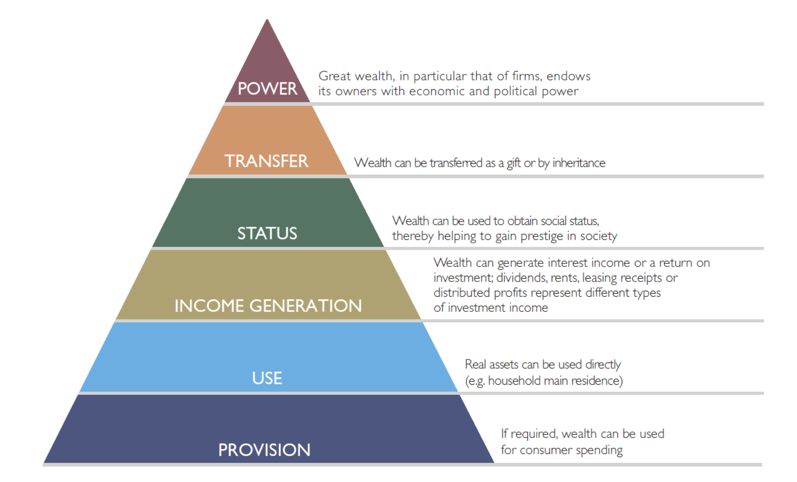
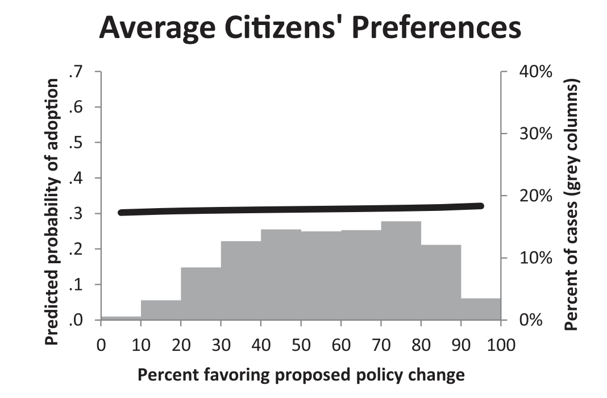
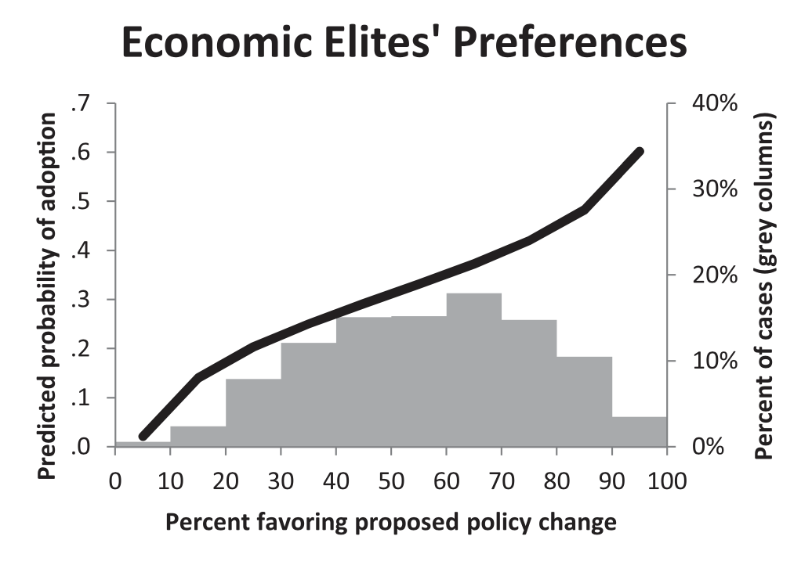
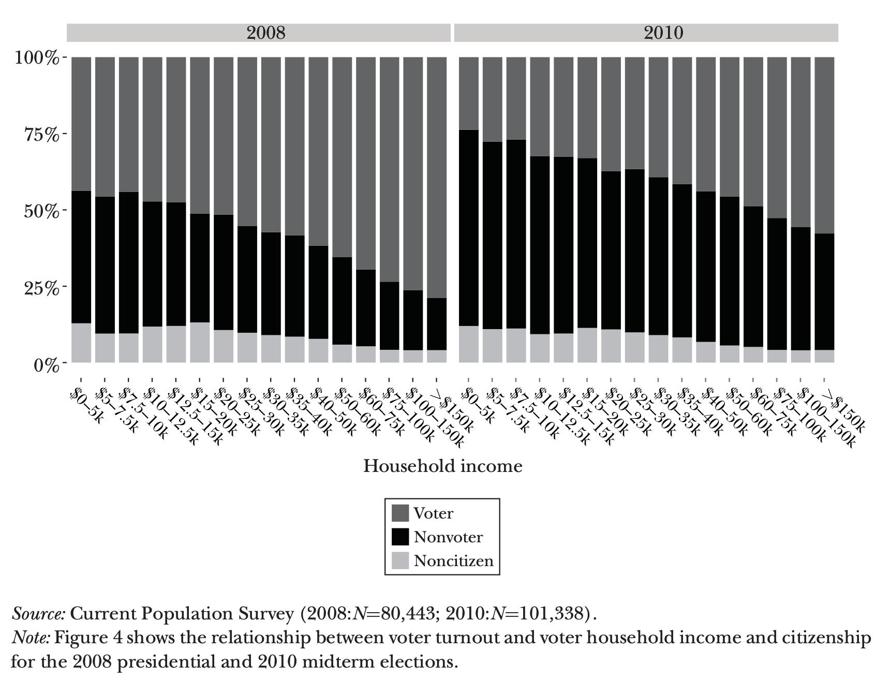

Economic Policy Visualization
Inequality, power and policy conclusions
Recap
- How does the fiscal multiplier work?
- How to resolve the trade-off between unemployment and surplus production in a Keynesian framework?
- What is the effect of restrictive fiscal policy on inequality?
- What is the effect of expansive monetary policy on inequality?
Economic policy and power

Power in mainstream economics I
- Power is restricted to monopoly power and bargaining power as deviations in General Equilibrium Theory: Perfect markets are free of power imbalances
- Böhm-Bawerk (1914): “Macht oder ökonomisches Gesetz” in a controversy with the German Historical School of Economics (esp. Rudolf Stolzmann)
- Perspective: methodological individualism vs. social classes (Rothschild, 2002); Power remains individualised, no institutions or power regimes
- Epistemology: Economics perceives itself as exact science with physics-inspired methodology which is superiour to other social sciences (see e.g. Fourcade et al., 2015; Lazear, 2000)
Power in mainstream economics II
- Samuelson (1957): “Remember that in a perfectly competitive market, it really does not matter who hires whom; so have labor hire capital.”
- “Hiring simply means buying”: Why should one contracting partner wield more power?
- Alchian/Demsetz (1972): “The firm […] has no power of fiat, no authority, no disciplinary action any different […] from ordinary market contracting between any two people.”
- Is there a difference between the relations Shopkeeper-Employee and Shopkeeper-Customer?
Power between mainstream and heterodox economics
- Classical economists addressed the balance of powers
- Smith: Power balance between social classes
- Marx: class struggle; exploitation;
- (Petty, Quesnay, Ricardo, etc.)
- George Akerlof: Asymmetrical information
- Michal Kalecki: Degree of monopoly; political aspects of full employment;
- Bowles/Gintis: Short-side power; the role of (threats of) sanctions;
- Political Economy: Relational, strategic, structural power
Definitions of power
A exercises power over B when A affects B in a manner contrary to B‘s interest. (Max Weber)
Person A has power over person B is equivalent to saying that A’s behaviour causes B’s behaviour. (Robert Dahl)
Rather than A getting B to do something B would not otherwise do, social relations of power typically involve both A and B doing what they ordinarily do. (Karl Marx)
See also: Dahl (1957)
Functions of wealth

Source: Fessler/Schürz (2018)
Power relations affect distribution
I attempt to show that social classes should be analyzed as power and production relations between social groups, not just as deciles in statistical distributions.
The main question confronting us today is not really about capital in the twenty-first century. It is about democracy in the twenty-first century.
Interdependence of power and inequality
I start from the rather pragmatic concern that current levels of inequality are too high and that this outcome in part reflects the fact that the balance of power is weighted against consumers and workers.
It is my belief that the rise in inequality can in many cases be traced directly or indirectly to changes in the balance of powers. If that is correct, then measures to reduce inequality can be successful only if countervailing power is brought to bear.
Source: Atkinson (2015, 83, 124)
Inequality and power: current policy challenges
- Imbalances between public and private wealth and the democratic organisation of vital tasks in the welfare state
- Narrow financial leeway for fiscal policy versus increasing concentration of private wealth
- Patronage and philanthropy as instruments of power?
- Political participation and interference
- Private wealth and possibilities to create profitable economic conditions
- Tax policy (LuxLeaks, Panama Leaks), trade policy (TTIP, CETA), social policy
- Commodification as a result of social power imbalances
Further reading: Rehm/Schnetzer (2015)
Who commands policy?


Source: Gilens/Page (2014)
One person, one vote?

Source: Bonica et al. (2013)